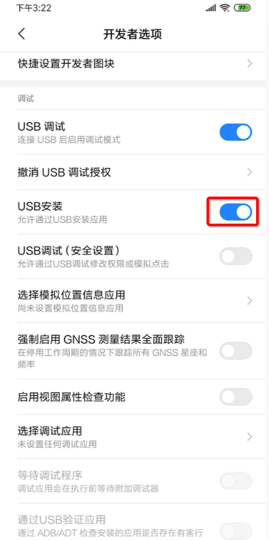
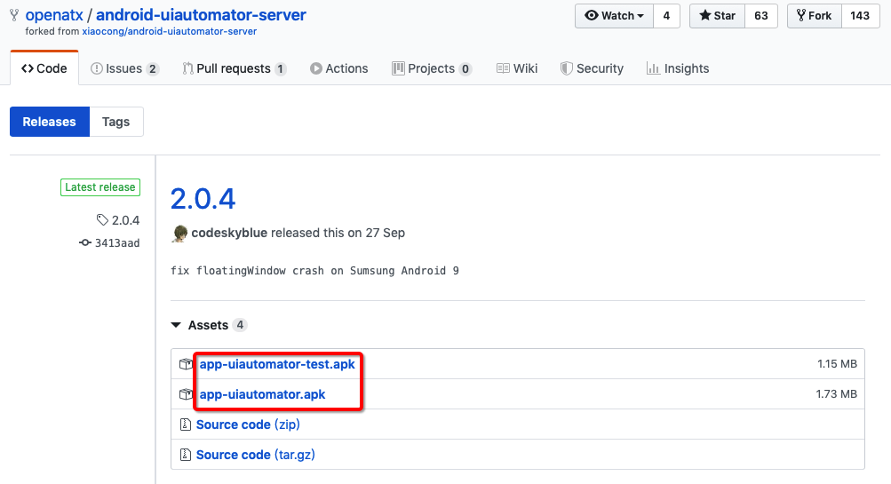
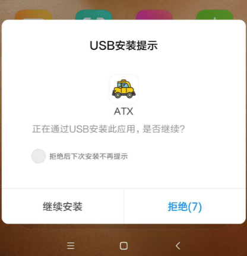
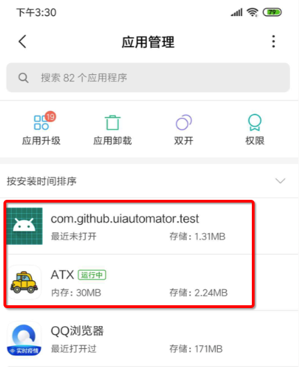
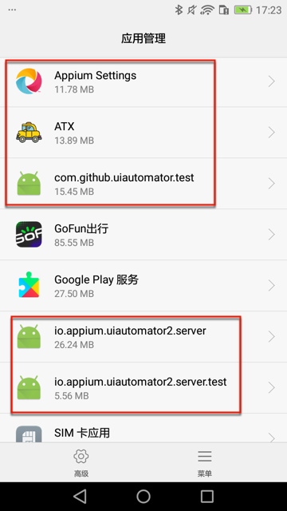
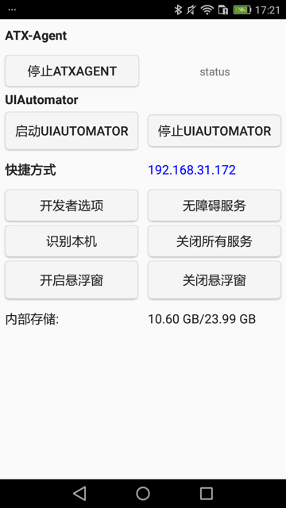
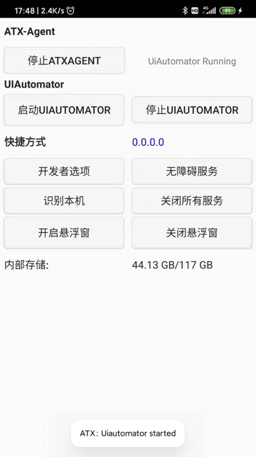

环境搭建
下面介绍如何搭建uiautomator2的开发环境，去测试安卓设备。
准备工作：安卓手机
确保手机中开启了USB安装
安卓手机中开启 开发者选项->USB调试->USB安装

否则后续无法正常安装uiautomator2相关的ATX等软件和服务。
安装
pip3 install -U uiautomator2
- 如果包管理器是
pipenv，则用：pipenv install uiautomator2 - 最新版(
1.3.0+)无需再去python3 -m uiautomator2 init- 后续代码首次
u2.connect()会自动安装所需的apk的
- 后续代码首次
测试连接
再去测试连接：
import uiautomator2 as u2
d = u2.connect() # connect to device
print(d.info)
其中：
u2.connect()可以换成wifi或usb：
- wifi
d = u2.connect('10.0.0.1') - usb
d = u2.connect('8c8a4d4d')- 其中
8c8a4d4d是adb devices列出的当前（用USB数据线连接到Mac中的）安卓设备的ID➜ ~ adb devices List of devices attached 8c8a4d4d device
- 其中
输出举例：
➜ autoTestAndroidGameHappyBigBattle python
Python 3.7.3 (default, May 22 2019, 10:55:14)
[Clang 10.0.1 (clang-1001.0.46.4)] on darwin
Type "help", "copyright", "credits" or "license" for more information.
>>> import uiautomator2 as u2
>>> d = u2.connect('8c8a4d4d')
conn=<urllib3.connection.HTTPConnection object at 0x1077f4da0>,method=GET,url=/version,timeout_obj=Timeout(connect=2, read=2, total=None),body=None,headers={'User-Agent': 'python-requests/2.22.0', 'Accept-Encoding': 'gzip, deflate', 'Accept': '*/*', 'Connection': 'keep-alive'},chunked=False
和：红米Note10X打开了微信的输出：
{'currentPackageName': 'com.tencent.mm', 'displayHeight': 2201, 'displayRotation': 0, 'displaySizeDpX': 393, 'displaySizeDpY': 873, 'displayWidth': 1080, 'productName': 'atom', 'screenOn': True, 'sdkInt': 29, 'naturalOrientation': True}
说明：安装细节
安装内容
上述命令会安装相关工具到你安卓手机中：
- uiautomator-server
- 作用：包含httprpc服务的apk
- 2个apk
- 图解
- 
- 框架要求2个apk，缺一不可
- app-uiautomator-test.apk：测试程序
- uiautomator这个框架允许我们测试第三方应用
- 包名：com.github.uiautomator.test
- app-uiautomator.apk：被测应用
- 基本就是个傀儡
- 只要别轻易的死掉，就算是一个合格的应用了
- 包名：com.github.uiautomator
- 基本就是个傀儡
- app-uiautomator-test.apk：测试程序
- 图解
- 2个apk
- 地址：https://github.com/openatx/android-uiautomator-server/releases
- 作用：包含httprpc服务的apk
- atx-agent
- openstf/minicap
- openstf/minitouch
安装log日志
期间如果开启了uiautomator2的debug后，可以看到更详细的信息。
比如安装路径（小米9中安装期间显示安装的东西有）：
- minicap、minitouch
- com.github.uiautomator, com.github.uiautomator.test 2.0.3
- https://tool.appetizer.io/openatx/android-uiautomator-jsonrpcserver/releases/download/v0.1.6/bundle.jar
- https://tool.appetizer.io/openatx/android-uiautomator-jsonrpcserver/releases/download/v0.1.6/uiautomator-stub.jar
- https://tool.appetizer.io/openatx/android-uiautomator-server/releases/download/2.0.3/app-uiautomator.apk
- https://tool.appetizer.io/openatx/android-uiautomator-server/releases/download/2.0.3/app-uiautomator-test.apk
安卓6的华为畅享6S，重新初始化的log是：
[200218 13:55:44][DevicesMethods.py 11 ] start init driver
[I 200218 13:55:45 init:132] uiautomator2 version: 2.5.3
[I 200218 13:55:45 init:317] Install minicap, minitouch
[I 200218 13:55:45 init:330] Install com.github.uiautomator, com.github.uiautomator.test 2.1.1
[I 200218 13:56:02 init:300] - app-uiautomator.apk installed
[I 200218 13:56:14 init:300] - app-uiautomator-test.apk installed
[I 200218 13:56:14 init:308] Install atx-agent 0.8.2
[I 200218 13:56:19 init:342] Check atx-agent version
Successfully init AdbDevice(serial=DWH9X17124W03779)
安卓9的红米Note8Pro的初始化log是：
[200217 14:45:33][DevicesMethods.py 11 ] start init driver
[I 200217 14:45:37 init:132] uiautomator2 version: 2.5.3
[I 200217 14:45:37 init:317] Install minicap, minitouch
minicap.so |⣿⣿⣿⣿⣿⣿⣿⣿⣿⣿| 67.1K/67.1K
[I 200217 14:45:37 init:330] Install com.github.uiautomator, com.github.uiautomator.test 2.1.1
[I 200217 14:45:38 init:300] - app-uiautomator.apk installed
[I 200217 14:45:38 init:300] - app-uiautomator-test.apk installed
[I 200217 14:45:38 init:308] Install atx-agent 0.8.2
[I 200217 14:45:39 init:342] Check atx-agent version
Successfully init AdbDevice(serial=hmucaei75ptk7szs)
分别对应着去安装：
- minicap和minitouch
- com.github.uiautomator和com.github.uiautomator.test
- 对应着：app-uiautomator.apk和app-uiautomator-test.apk
- atx-agent
安装后的app
不过，实际上（安卓10的小米9，安卓9的小米Note8Pro）只安装了，最核心的2个：
- ATX
- 桌面图标
- 安装期间需要手动点击 继续安装
- 
- 桌面图标
- com.github.uiautomator.test
- 桌面图片：无
- 安装期间，需要手动点击：继续安装
安装后，可以在应用管理中找到，刚才安装的2个应用：
- 红米Note8Pro 安卓9
- 
- 华为畅享6S 安卓6
- 
ATX
关于ATX，启动后的主界面：

点击启动UIAUTOMATOR后，会显示：ATX：Uiautomator started
